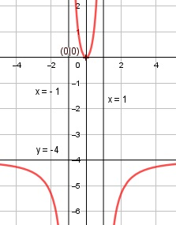

Aufgabe 119 4x2 f(x) = ------- 1 - x2 Quotientenregel erste Ableitung: u = 4x2, u' = 8x v = 1 - x2, v' = - 2x 8x * (1 - x2) - (-2x) * 4x2 f'(x) = ------------------------------ (1 - x2)2 8x - 8x3 + 8x3 8x f'(x) = ---------------- = --------- (1 - x2)2 (1 - x2)2 Quotientenregel zweite Ableitung: u = 8x, u' = 8 v = (1- x2)2 Kettenregel: v' = 2 * (-2x) * (1 - x2) = - 4x * (1 - x2) 8 * (1 - x2)2 - (- 4x)(1 - x2) * 8x f''(x) = --------------------------------------- (1 - x2)4 (1 - x2) * [8 * (1- x2) + 32x2 ] f''(x) = ---------------------------------- (1 - x2)2 8 - 8x2 + 32x2 24x2 + 8 f''(x) = ------------------ = ----------- (1 - x2)3 (1 - x2)3 Zur Beurteilung, ob f'''(x) ≠ 0 : (Begründung siehe Aufgabe 105) u = 24x2 + 8, u' = 48x u' 48x f'''(x) = --- = ----------- ist v (1 - x2)3 immer ≠ 0 für alle x ≠ 0, 1, -1 Polstellen, Nenner = 0: 1 - x2 = 0 |+x2 x2 = 1|ⱱ x1,2 = ± 1 Nenner = 0 und Zähler = 4 * ±12 = 4 ≠ 0 --> senkrechte Asymptote bei x = 1 und x = -1 Definitionsbereich: -∞ < x < ∞, x ≠ ±1 Waagerechte Asymptote: 4 f(x) = 4x2 : 1 - x2 = -4 + -------- -(4x2 - 4) 1 - x2 ---------- 4 4 -4 + --------- geht gegen -4 für x --> ± ∞ 1 - x2 Wertebereich: -∞ < f(x) < -4, 0 ≤ f(x) < ∞ (siehe Asymptoten und Extrempunkte) Symmetrie zur y-Achse bzw. zum Punkt (0|0): 4 * (-x)2 4x2 f(-x) = ---------- = -------- = f(x) 1 - (-x)2 1 - x2 --> Achsensymmetrie -4x2 -f(-x) = -------- = ≠ f(x) 1 - x2 --> keine Punktsymmetrie Nullstellen: f(x) = 0 4x2 -------- = 0 |*(1 - x2) 1 - x2 4x2 = 0 |:4 x2 = 0 |ⱱ x1,2 = 0 --> Berührpunkt N1,2(0|0) Schnittpunkt mit der y-Achse: x = 0 4 * 02 f(0) = ---------- = 0 1 - 02 Sy(0|0) Extrempunkte: f'(x) = 0 8x ----------- = 0 |*(1 - x2)2 (1 - x2)2 8x = 0 |:8 x = 0; f(0) = 0 24 * 0 + 8 f''(0) = --------------- > 0 (1 - 02)3 --> Tiefpunkt (0|0) Wendepunkte: f''(x) = 0 24x3 + 8 ----------- = 0 |*(1 - x2)3 (1 - x2)3 24x2 + 8 = 0 |-8 24x2 = -8 |:24 x2 = -1/3 |ⱱ --> keine Lösung --> keine Wendepunkte
